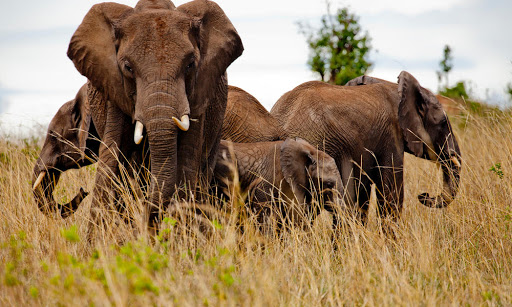

Tiger

Herd of Elephants
Tiger
Herd of Elephants
Lions
Baby with mother, both elephants
This is my photography world. Here are some facts along with my photos.
1:Nearly all wild lions live in Africa, below the Sahara Desert, but one small population exists around Gir Forest National Park in western India.
2:On average, males weigh 190kg (almost 30 stone) and females weigh 126kg (almost 20 stone).
3:Young lions have rosettes and spots on their sandy coats, but these generally disappear as they mature.
4:Male lions grow impressive manes the older they get. These manes grow up to 16cm long and are a sign of dominance. The older they get, the darker their manes go.
5:A pride of lions is usually made up of related females and their cubs, plus a male or small group of males who defend their pride. The lionesses rear their cubs together and cubs can suckle from any female with milk.
6:The African elephant is the world's largest land mammal – with males on average measuring up to 3m high and weighing up to 6 tonnes.
7:There are two species of elephant: African and Asian. The ears of African elephants are much larger than their cousins and are described as being shaped like the African continent, whereas the ears of Asian elephants are shaped like the Indian subcontinent.
8:Elephants have around 150,000 muscle units in their trunk. Their trunks are perhaps the most sensitive organ found in any mammal - Asian elephants have been seen to pick up a peanut, shell it, blow the shell out and eat the nut.
9:Elephant tusks are actually enlarged incisor teeth which first appear when elephants are around 2 years old. Tusks continue growing throughout their lives.
10:An elephant’s skin is 2.5cm thick in most places. The folds and wrinkles in their skin can retain up to 10 times more water than flat skin does, which helps to cool them down.